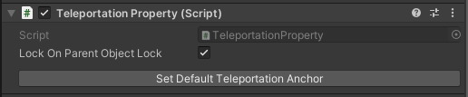

Teleport
Description
The Teleport condition is fulfilled when the user teleports to any of the referenced Teleportation Points. Previous teleportation actions made into a Teleportation Point are not considered.
If an anchor used as Teleportation Point has proximity detection enabled, the condition will be fulfilled not only if the user teleports to it, but also if they move close to it with continuous movement or by walking in the room. You can activate proximity detection when you need the user to be in a specific location, regardless of whether they teleport or arrive there by other locomotion types.
The provided Teleportation Property is based on the Unity XR Interaction Toolkit's Teleportation Anchor. For further reference, please check out the XR Interaction Toolkit documentation.
Configuring a Teleportation Point
The
Teleportation Propertycan be set as a Default Teleportation Anchor by clicking on theSet Default Teleportation Anchorbutton. You can find it when selecting theTeleportation Pointand viewing it in the Unity Inspector.
This will configure the attached
Teleportation Anchor. It will provide a visual element in the Unity Editor that helps placing theTeleportation Pointin the scene. This visual element will also be shown in the virtual world during training execution to guide the user.
Configuration
Teleportation Points
The
Teleportation Propertiesof which one, the user should teleport to.